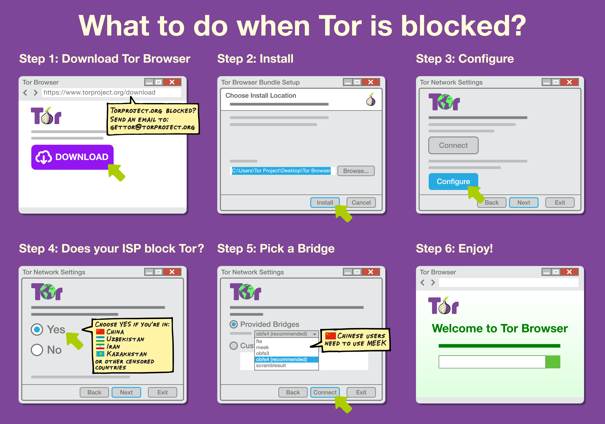

Tor: Pluggable Transports
Sometimes the Tor network is censored, and you can't connect to it.
An increasing number of censoring countries are using Deep Packet Inspection (DPI) to classify Internet traffic flows by protocol. While Tor uses bridge relays to get around a censor that blocks by IP address, the censor can use DPI to recognize and filter Tor traffic flows even when they connect to unexpected IP addresses.
Pluggable Transports help you bypass censorship against Tor.
Pluggable Transports (PT) transform the Tor traffic flow between the client and the bridge. This way, censors who monitor traffic between the client and the bridge will see innocent-looking transformed traffic instead of the actual Tor traffic. External programs can talk to Tor clients and Tor bridges using the pluggable transport API, to make it easier to build interoperable programs.
Learn more:
- How to use a Pluggable Transport
- How to become a PT bridge operator
- How to become a PT developer
- List of PTs organized by their status
How to use PTs to bypass censorship
If connections to the Tor network are being blocked by your ISP or country, follow these instructions:
Become a PT bridge operator:
How to run PTs to help censored users
Anyone can set up a PT bridge server and help provide bandwidth to users who needs it. Once you set up a transport type, your bridge will automatically advertise support for the transport in its descriptor.
obfs4 is currently the most effective transport to bypass
censorship. We are asking volunteers to run bridges for it.
To learn
how to run this transport, please visit the obfs4proxy
wiki page.
Go to our wiki to learn how to set up other types of PTs.
Become a PT developer:
The links below are the main documentation for PT developers
- Guidelines for deploying Pluggable Transports on Tor Browser
- PT technical spec
- Pluggable Transports Evaluation Criteria
Our wiki is also a great source of information, such as how to get in touch with the community, ideas for new PTs, how to help with PTs already deployed and much more.
List of PTs organized by status:
Currently deployed PTs
These Pluggable Transports are currently deployed in Tor Browser, and you can start using them by downloading and using Tor Browser.
- obfs4
- Description: Is a transport with the same features as ScrambleSuit but utilizing Dan Bernstein's elligator2 technique for public key obfuscation, and the ntor protocol for one-way authentication. This results in a faster protocol.
- Language: Go
- Maintainer: Yawning Angel
- Evaluation: obfs4 Evaluation
- meek
- Description: Is a transport that uses HTTP for carrying bytes and TLS for obfuscation. Traffic is relayed through a third-party server (Google App Engine). It uses a trick to talk to the third party so that it looks like it is talking to an unblocked server.
- Language: Go
- Maintainer: David Fifield
- Evaluation: meek Evaluation
- Format-Transforming Encryption (FTE)
- Description: It transforms Tor traffic to arbitrary formats using their language descriptions. See the research paper.
- Language: Python/C++
- Maintainer: Kevin Dyer
- Evaluation: FTE Evaluation
- ScrambleSuit
- Description: Is a pluggable transport that protects against follow-up probing attacks and is also capable of changing its network fingerprint (packet length distribution, inter-arrival times, etc.).
- Language: Python
- Maintainer: Philipp Winter
- Evaluation: ScrambleSuit Evaluation
Undeployed PTs
- StegoTorus
- Description:is an Obfsproxy fork that extends it to a) split Tor streams across multiple connections to avoid packet size signatures, and b) embed the traffic flows in traces that look like HTML, JavasCript, or PDF. See its git repository.
- Language: C++
- Maintainer: Zack Weinberg
- Evaluation: none
- SkypeMorph
- Description: It transforms Tor traffic flows so they look like Skype Video. See its source code and design paper.
- Language:
- Maintainer: Ian Goldberg.
- Evaluation: none
- Dust
- Description: It aims to provide a packet-based (rather than connection-based) DPI-resistant protocol. See its git repository.
- Language: Python
- Maintainer: Brandon Wiley.
- Evaluation: none
Our goal is to have a wide variety of Pluggable Transport designs. You can check out a full list of Pluggables Transports here.
Many are at the research phase now, so it's a perfect time to play with them or suggest new designs. Please let us know if you find or start other projects that could be useful for making Tor's traffic flows more DPI-resistant!
Tor Tip
Tor is written for and supported by people like you. Donate today!

{kind=link}